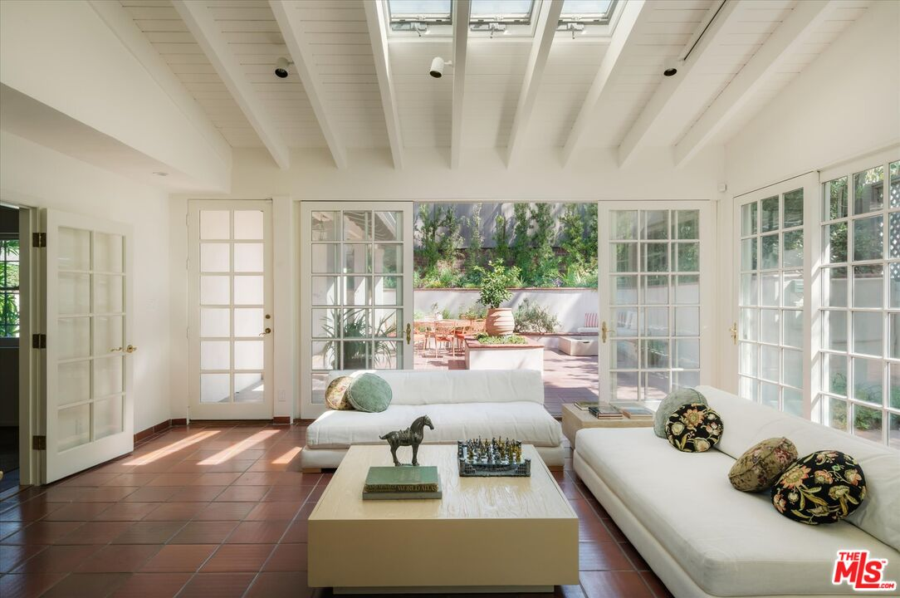
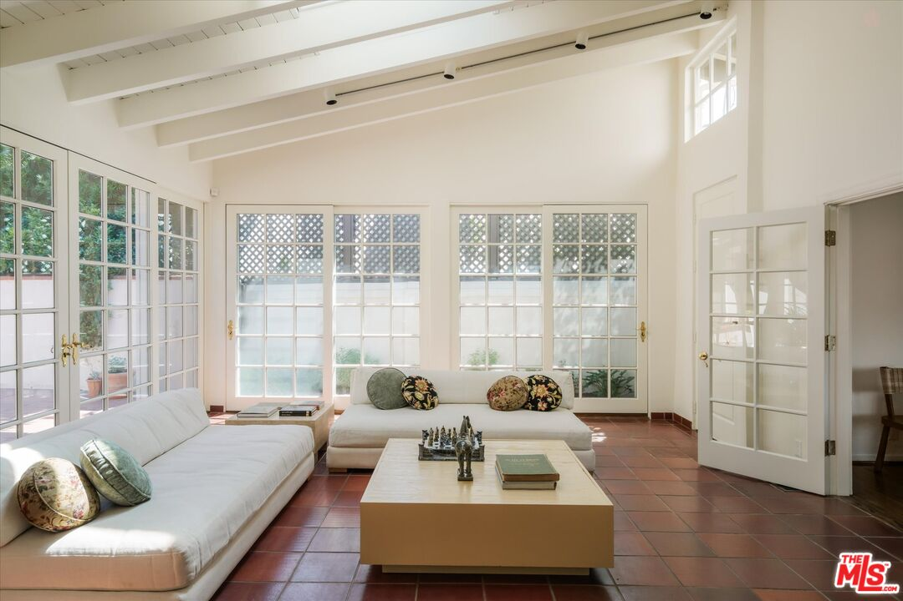
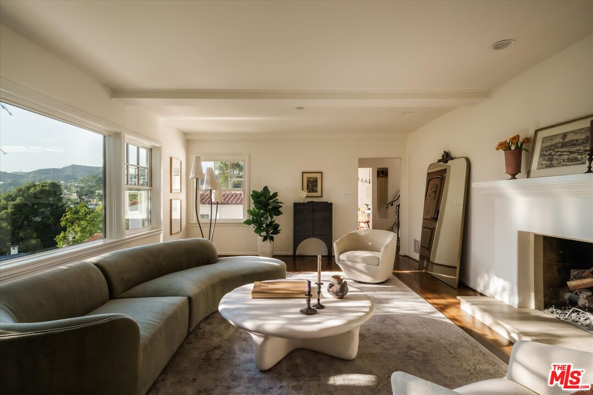
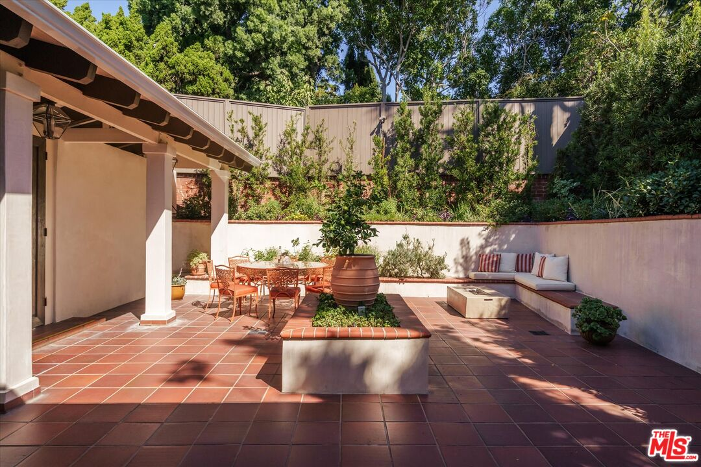

Obsession No. 024Moreno Highlands · Silver Lake
2560 Micheltorena St
The skylights and open French doors turn this room into a complete ball of light, sunshine, and good vibes.
Why it made the edit
“Such an amazing location, such good bones, and that sunroom is already doing the most.”
I am completely taken with the sunroom here. The ceiling is vaulted, there is a whole row of skylights overhead, and the French doors open all the way to the patio.
It is just a ball of light, sunshine, and good vibes. The kind of room that would make a Tuesday lunch at home feel like an occasion.
The house has that rare combination of being completely move-in ready and still offering a real opportunity to make it shine in your own way. The kitchen is already updated, the main living room looks out through its picture window to the trees and hills, and the patios and terraced gardens are ready for dinner, coffee, or a very good excuse to stay outside all day.
But there is room here for someone with a point of view to bring in their own finishes, colors, and ideas and make it really sparkle.
It is a 1936 Monterey Colonial designed by Laurence B. Clapp, on the market for the first time in more than 70 years, with Hollywood Hills and Griffith Observatory views. The upper levels have three bedrooms, plus a flexible lower level with a family room, guest bedroom, and bath. Four bedrooms, four baths, and 3,185 square feet on a 9,136-square-foot lot in the Moreno Highlands, listed at $2,895,000. Such an amazing location, such good bones, and that sunroom is already doing the most.



Want to see it in person?
Curious about this one?
Let’s talk.
Listed by Mary Regal & Rob Kallick, Compass. House of Zonshine does not represent this listing. Property details are from listing information and public sources and should be independently verified.